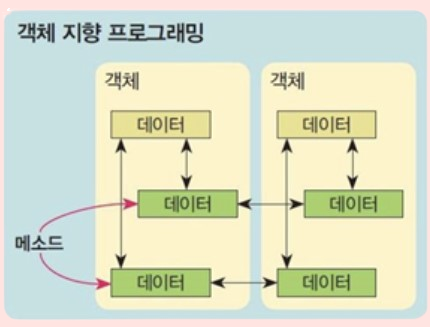

객체 지향 프로그래밍
객체 지향 프로그래밍(Object-Oriented Programming, OOP)은 소프트웨어를 구현하는 방법 중 하나입니다.
이 방법은 프로그램을 작성할 때 객체(Object)를 중심으로 생각하며, 객체를 이용하여 소프트웨어를 구현합니다.
객체는 데이터와 그 데이터를 처리하는 메소드(Method)로 구성됩니다.이러한 객체들을 만들고,
객체들 간의 상호작용을 통해 소프트웨어를 구현하는 것이 객체 지향 프로그래밍입니다.
객체 지향 프로그래밍에서는 각 객체가 독립적으로 존재하며,객체 간의 상호작용을 통해 문제를 해결합니다.
또한, 현실 세계의 개념과 구조를 모델링하여 소프트웨어를 개발하는 방법으로,
큰 규모의 복잡한 문제를 해결하는 데 효과적입니다.
이를 통해 코드의 재사용성과 유지 보수성이 향상되며,
개발 과정에서 생산성을 높일 수 있습니다.